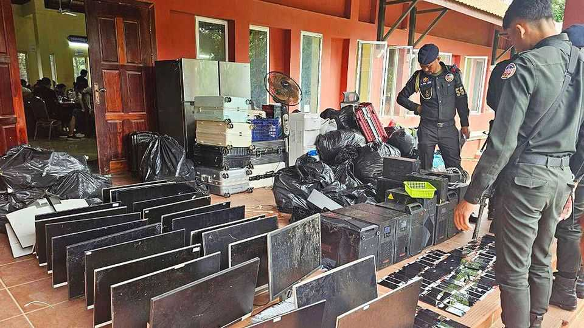

A real but selective crackdown on Cambodia’s scam industry
Sanctions from America and pressure from China have forced a reckoning
July 16th 2026

IN JANUARY CAMBODIA extradited Chen Zhi, believed to be the boss of one of Asia’s most powerful criminal organisations, to China. Mr Chen, notorious for online fraud, was an adviser to Hun Sen, Cambodia’s longtime strongman. His fate has spooked scam moguls across the country: if the most powerful man in Cambodia could not protect Mr Chen, nobody was safe. Since then, tens of thousands of workers trapped in compounds ringed by barbed wire and armed guards, forced to defraud people around the world, have flooded onto Cambodia’s streets after their bosses fled, leaving the gates open.
The global online fraud industry is estimated to steal more than $500bn a year from victims worldwide, putting it on a par with the illicit drug trade. Nowhere in Asia are politics and cybercrime more deeply enmeshed than in Cambodia, where online scams may generate up to $19bn a year, equivalent to 40% of the country’s formal GDP and more than garment manufacturing, its largest legitimate industry.
For years Cambodia was known for staging fake crackdowns, with police raiding empty buildings after the bosses had been tipped off. The past six months have been different, but not as different as the government claims. Cambodia is under greater international pressure than ever before. The crackdown “is not fake; but it is selective and strategic,” says Jacob Sims of Inca Digital, a data-analytics firm. The risks to the elite are multiplying. After America and Britain slapped sanctions on Mr Chen last October, Hong Kong, Singapore, South Korea, Taiwan and Thailand seized assets belonging to him and imposed sanctions of their own. “Our country’s image has been damaged and tarnished by online scam syndicates,” said Mr Hun Sen in May. In April he signed Cambodia’s first anti-fraud statute. Over the past year the government has closed more than 90 casinos, according to Neth Pheaktra, the information minister. Scam operations are often run from inside casinos, which also help launder the proceeds.
American pressure continues to mount. Last October the Department of Justice seized around $15bn in cryptocurrency from Mr Chen, its largest-ever seizure of foreign assets anywhere. In April the Treasury sanctioned Kok An, a Cambodian senator who controls scam compounds across the country. In June it imposed sanctions on nine people and 26 entities linked to Mr Chen’s Prince Group, a Cambodian conglomerate spanning property, finance and consumer services. It also blocked subsidiaries of Huione Group, another conglomerate believed to have links to Mr Chen, from using America’s financial system. Huione Group is the firm behind “the largest-ever illicit online marketplace”, according to Elliptic, a blockchain-analytics firm based in London.
Fighting fraud has become one of America’s foreign-policy priorities in South-East Asia. It fits into an America-first mindset better than many other issues, since it can easily be characterised as dealing with criminals who are making America weaker. Even as America’s presence in the region shrinks, its Scam Centre Strike Force is tackling the biggest form of financial crime ever to hit Americans, who are reckoned by their government to lose at least $10bn a year to scams, and probably considerably more.
China began squeezing the industry years earlier: its citizens are both the scammers’ prime victims and also supply much of the workforce inside the compounds. Liu Zhongyi of China’s Ministry of Public Security visited Cambodia just as the current crackdown began. China, Cambodia, Laos, Myanmar, Thailand and Vietnam now share intelligence and mount joint operations against the industry. Scams cost Cambodia in other ways, too. Chinese tourists, increasingly fearful of being grabbed and forced to work in the scam farms, numbered just 850,000 in 2024, down from 2.4m in 2019. Cambodia now offers them visa-free entry in the hope of encouraging a revival.
Yet the industry is adapting rather than dying. Operations are shifting yet again, this time to Laos and Myanmar, the other main hosts of the world’s scam compounds; Sri Lanka and Indonesia are home to yet others, says John Wojcik of Infoblox, a security firm. Cybercrime will also continue in Cambodia. Selective enforcement has eliminated some scam compounds, but not the system that protects them. No sitting or former ministers have been charged by Cambodia’s officers, despite a number of donations that Prince Group has been documented as having made to the ruling party. ■
For exclusive coverage of Asian politics, economics and security, sign up to Asia Bulletin, our weekly subscriber-only newsletter.